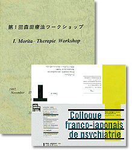
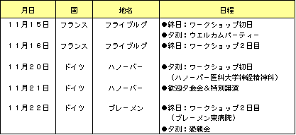
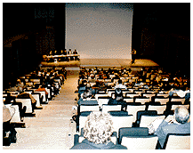
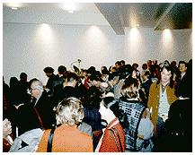
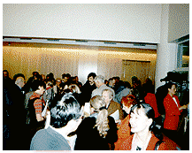
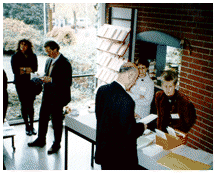
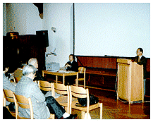
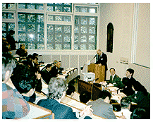
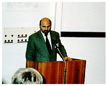
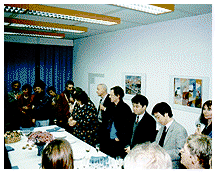

「第1回ドイツ&フランス 森田療法ワークショップ」報告

Ein eroffnendes Gesprach auf psychotherapeutisch-philosophischer Grundlage
15/16 November 1997
Ostliche Psychotherapieformen stellen fur westliche Psychotherapeuten noch weitgehend eine "terra incognita" dar.Die
japanische Morita-Therapie wurde von dem Psychiater Morita Masatake Shoma(1874-1938)begrundet.
Im personclichen Kontakt mit O.Binswanger und mit den Konzepten anderer westlicher Psychotherapeuten entwickelte Morita
seit 1919 ein eigenes Heilverfahren fur psychogene Neurosen.
Inzwischen wird es in ganz Japan an Universitataskliniken und Therapiezentren praktiziert.
ワークショップの日程
| 11月15日 | |
| 9:00 | ホールにコーヒーの準備 |
| 9:15 | ごあいさつ（ヴェンツラー） 「森田療法と私」（岡本常男） |
| 9:45 | 「森田療法における自我の役割と心身相関」（渡辺直樹） |
| 10:15 | 「森田療法の方法論とその理論的基礎」（藤田千尋） - ディスカッション - |
| 11:15 | コーヒータイム |
| 11:30 | 「感情と欲求の理論からみた森田療法」（北西憲二） |
| 12:00 | 「森田療法における治癒過程 - その普遍性と独自性」（中村 敬） - ディスカッション - |
| 13:00 | 昼 食 |
| 14:00 | コーヒー・紅茶サービス |
| 14:15 | 「西洋と東洋の精神療法における人になることの意味」（ロタール・カッツ） - ディスカッション - |
| 15:30 | コーヒータイム |
| 16:00 | 「文化と精神形態。森田療法における人となること」（イェンツ・ハイゼ） |
| 17:00 | 「森田療法の文化的背景」（近藤喬一） |
| 17:30 | 「生きがい療法 - 癌患者への森田療法」（伊丹仁朗） |
| 18:00 | ディスカッション |
| 18:30 | 夕 食 |
| 19:30 | ビデオ放映ならびに講演「森田療法の実践面」（横山 博） |
| 21:30頃 | 終 了 |
| 11月16日 | |
| 8:00 | 教会ミサへの招待（自由参加） |
| 9:00 | 朝 食 |
| 12:30 | 昼 食 |
| 10:00 - 12:30 および 14:00 - 16:00 | 小講演ならびにディスカッション 「森田療法の自然概念」（渡辺直樹） 前日の諸々のテーマの他に以下のテーマを取り上げる。 - 森田療法の適応と評価 - - 森田療法におけるセルフヘルプの可能性 - - 森田療法の限界 - |
| 11月17日 | |
| 14:30 | マンハイム精神保健研究所 心療内科 シエパンク教授との意見交換 |
| 11月19日 | |
| 16:00 | *デュッセルドルフでは癌の心身療法を行う専門家との交流が午後に行われるが、伊丹先生と渡辺および希望者のみが参加。一部レンタカーにて行動します。 |
| 11月20日 | |
| 19:00 - 22:00 | *ドイツ森田療法ワークショップ ハノーバー医科大学 主催・ハノーバー医科大学社会精神医学教授 ヴィーラント・マッハライト、 テーマ「比較文化精神療法」- 日本精神療法。 精神療法および哲学の基盤からの方向づけの討論 - *初めの1時間で渡辺が全参加者の問題関心を要約する。 岡本常男、横山 博、伊丹仁朗、藤田千尋、近藤喬一、 北西憲二、中村 敬 *ドイツの参加者は各20分づつそれぞれの考えを要約して話す。 ロタール・カッツ「東洋と西洋の精神療法における 主体の形成について」 イェンツ・ハイゼ「文化-病理-治療。森田療法の解釈によせて」 *最後の1時間は全参加者のによるディスカッション |
| 11月21・22日 ドイツ森田療法ワークショップ ブレーメン大学臨床心理学 | |
| 主催 ブレーメン大学臨床心理学 エレン・ラインケ教授 ブレーメン東病院 精神科 ハーゼルベック教授 心療内科 ハーク教授 児童精神科 リヒァルト教授 |
|
| 11月21日 ブレーメン大学 臨床心理学科大講堂 | |
| 20:30 | ロタール・カッツ 「自己と無。東洋と西洋の精神療法における主体の形成について」 コメンテーター 藤田千尋、近藤喬一 |
| 11月22日 ブレーメン東病院 ハウス「パルク」 | |
| 10:00 | ワークショップ。病院関係の参加者によるディスカッション 午後は一般参加者を対象にディスカッションを行う。 形式はハノーバーに準ずる。 |
ワークショップの参加者リスト
| 日本 | ドイツ |
|---|---|
| 岡本常男 [公益財団法人メンタルヘルス岡本記念財団] | ロタール・カッツ [マンハイム精神保健研究所] |
| 岡本佳子 [公益財団法人メンタルヘルス岡本記念財団] | L.ヴェンツラー教授 [フライブルグ・カトリックアカデミー主宰] |
| 松田伸助 [公益財団法人メンタルヘルス岡本記念財団] | J.ハイゼ教授 [ハンブルグ大学] |
| 伊丹仁朗 [柴田病院] | W.マッハライト教授 [ハノーバー医大社会精神科] |
| 横山博 [生活の発見会] | H.メイケル氏 [ハノーバー労働者福祉協議会] |
| 北西憲二 [成増厚生病院] | E.ラインケ教授（女史） [ブレーメン大学、応用臨床精神 分析センター「ディアローグ」] |
| 近藤喬一 [大正大学] | W.ドモッホ氏 [デュッセルドルフ市ハインリッヒ・ ハイネ大学心療産婦人科] |
| 藤田千尋ご夫妻 [常盤台神経科] | |
| 中村敬 [東京慈恵会医科大学第三病院精神神経科] | |
| 渡辺直樹 [聖マリアンナ医科大学精神療法センター] | |
| 草野美穂子 [東京慈恵会医科大学第三病院精神神経科] | |
| 館野歩 [東京慈恵会医科大学第三病院精神神経科] |
ワークショップの概況
- 11月13日から11月22日にかけて、ドイツ及びフランスの2カ国で、第1回目の森田療法ワークショップが開催されました。中国では既に回を重ねつつある森田セミナーですが、ヨーロッパでは今回が初めて。
- ドイツでは、東洋医学及び東洋哲学に対する関心は、予想以上に高く、ドイツ・ハイデルブルグ市（人口20万人）では、禅のクラブが10ヶ所以上もあり、ワークショップでも活発な意見交換がなされたとの事です。
- ドイツの初日（11/17）・ワークショップでは、心理学及び精神科など専門家の方々が多数参加され、初日から非常に盛況なワークショップとなり、特に、ドイツからは東洋哲学の「自然に対する考え方」「あるがまま」などについて、その根本的な考え方に対する意見や質問が多かった模様です。これらの背景には、昨今の西洋医学&哲学の理知・科学一辺倒の考え方に対して、何か行き詰まりと心の空白が感じられるのでは、ということです。
〈第1回ドイツ&フランス・森田療法ワークショップの開催日程〉

11月15・16日 - フランス -
日仏文化センターでの講演会

同会場でのパーティー風景


11月20〜22日 - ドイツ -
フライブルグのカトリックアカデミー受付

ブレーメン医科大学でのセミナー風景

フライブルグでの「森田療法ワークショップ」

ロタール・カッツ教授の講演

ブレーメン大学での親睦会は寿司パーティー
